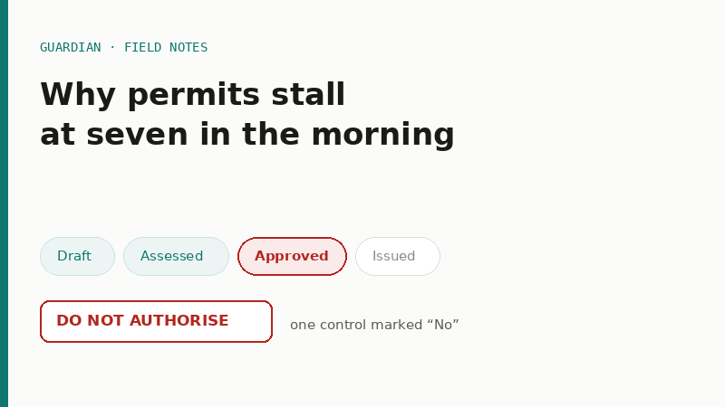
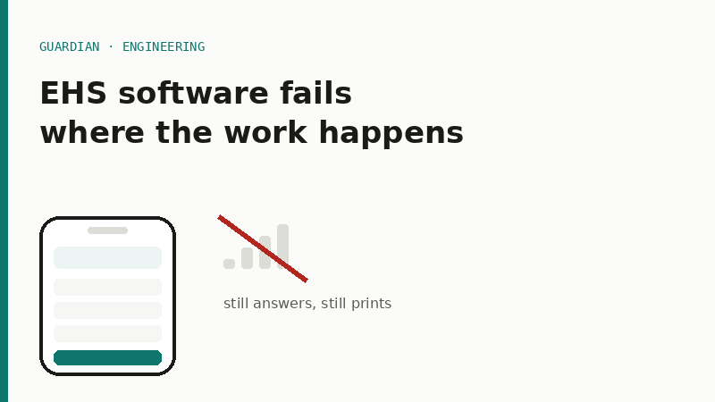

28 July 2026
Why permits stall at seven in the morning
A permit is not a form, it is a decision with a queue in front of it. What actually holds up the work front, and what a permit system has to do about it.
Short pieces from building Guardian and running EHS on live projects — what the standards say, what actually happens on site, and where the two part company.

A permit is not a form, it is a decision with a queue in front of it. What actually holds up the work front, and what a permit system has to do about it.

Basements, plant rooms, remote sites — the places safety matters most are the places with no signal. Why Guardian was built offline-first, and what that cost.
New posts land here as the work happens. Suggest a topic you would actually read: write in.